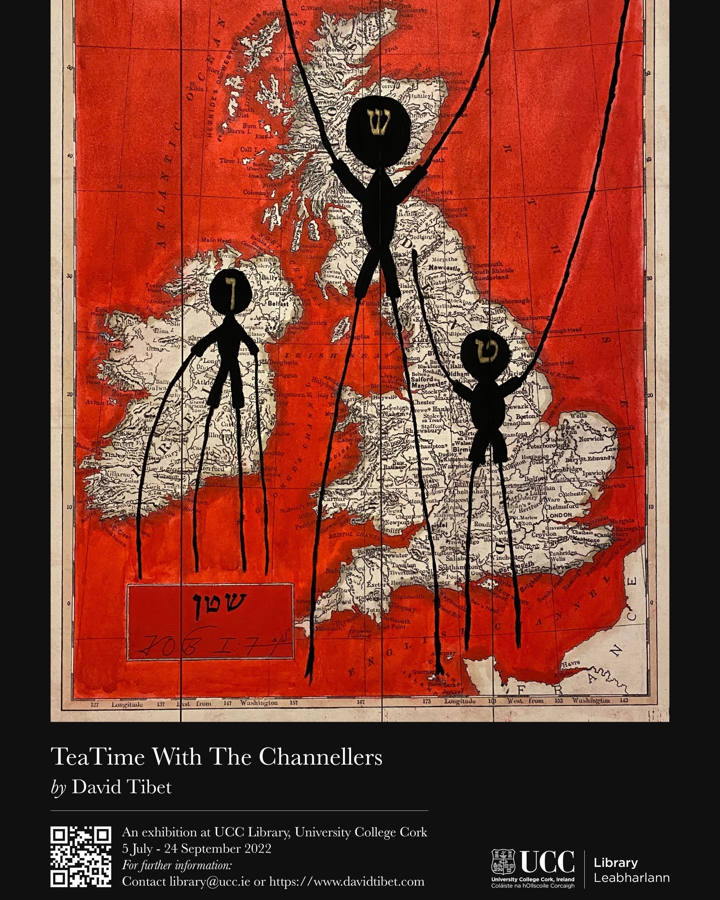
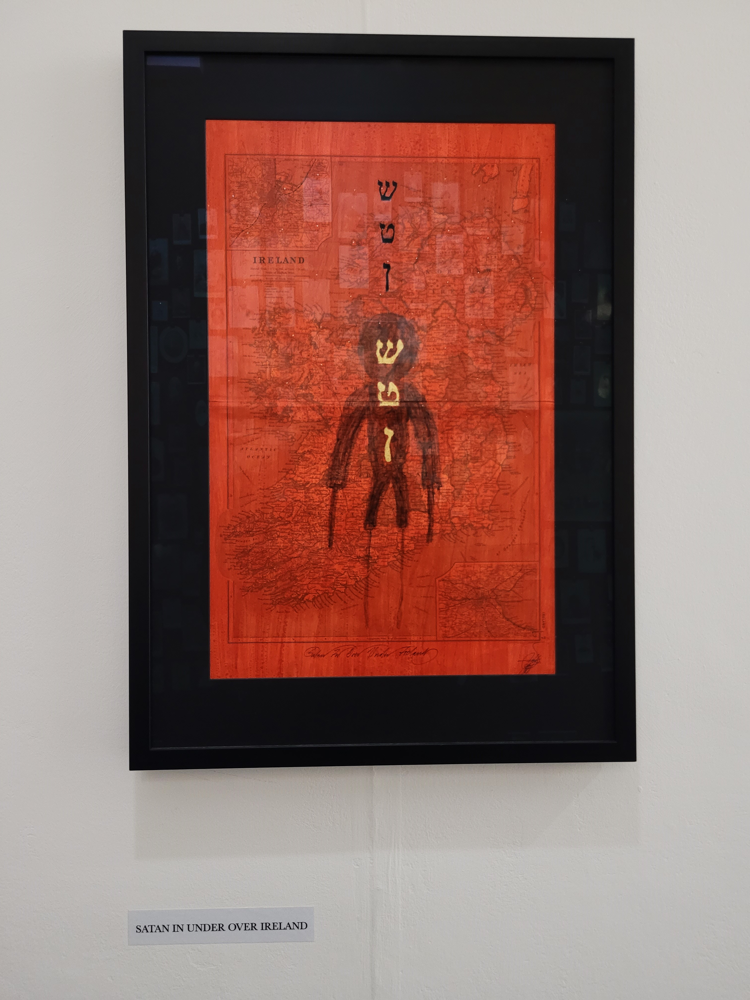
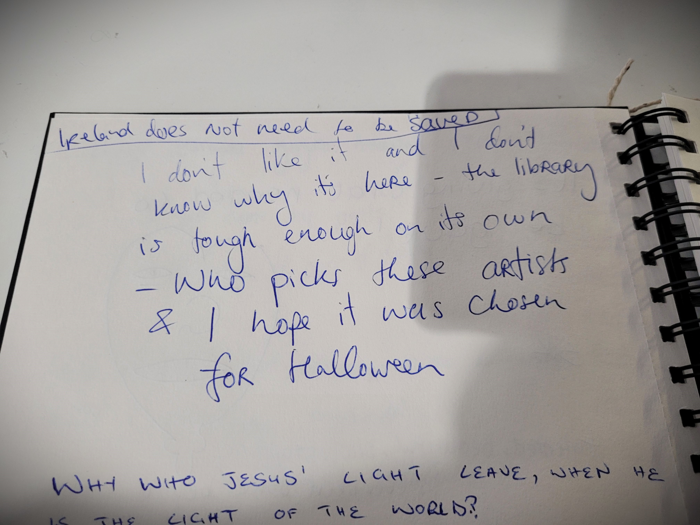
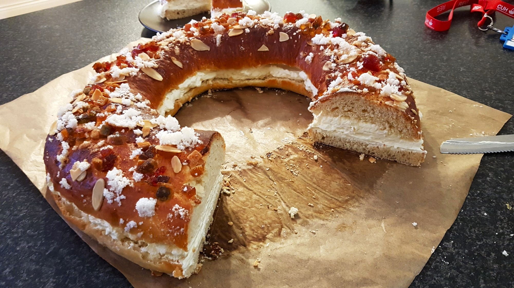

Been busy the last couple weeks studying, nothing very relevant happening or worth mentioning, although there is
some good news...
Good news: there is only one exam left (systems organisation).
Better news: I'm very happy with how the exams are going. We'll wait for the marks but the effort is paying off.
Even better news: I'm going back home for Christmas for the first time in 5 years! My flights are for Thursday morning
and I won't be back 'til way after New Years Day. All my last Christmases have been working at the hospital, so I'm really
excited to be back home for once. Well deserved if you ask me.
As I post this it will be the last night I spend studying in a while. I'll share a picture I took recently of christmassy UCC,
just across from Boole Library where I've spent lots of time lately.
If I normally find this university very charming, at Christmas
that feeling multiplies.
See you all soon,
Manuel.
The uncanny exhibition at Boole
Date: 10/12/22

I don't know if you've been to the UCC Library recently but there is a running exhibition called TeaTime With The Channellers by David Tibet.
It's quite an unusual exposition which, as per the UCC website, "presents the study of esotericism and paganism in Ireland". I had to look this up because
I came out of it quite disturbed and unsure of what I had seen. If that was the goal, consider it accomplished.
The exhibition will continue until Sunday 18th December 2022. You can find it at the Q floor of the Boole library, just at the right as you enter.
I've seen they run exhibitions at that same space every 3 to 6 months. I wonder what will be there when I come back after Christmas.
About the author
David Tibet was born in Malaysia in 1960, and lives in Hastings Old Town, England, with his Sidereal Queen Ania Goszczyńska and
their three cats, Fairy, Gef!, and Voirrey. He is the UrSource of the Hallucinatory Pop Group Current 93. His hobbies are studying and translating texts from
Akkadian, Biblical Hebrew, Coptic, and Ugaritic, and also painting, feeding BirdSong, reading supernatural fiction, and rebuilding Borley Rectory.
I'll leave a couple pictures of it. A special mention to one of the notes left in the visiting book, pictured in the last one.
Definitely made my day.

Recipe: Roscón de Reyes
Date: 02/12/12
Hey! Christmas is coming!
It's the perfect occasion to try the typical Spanish Roscón de Reyes,
also called King Cake in other countries.
In Spain people buy them for the special occasion in a cake shop/supermarket. I've never met
anyone
that has made it at home before apart from my grandma.
Since I've worked every Christmas since I came to Ireland, the roscón is
something that I was
missing. Last year I decided to give it a try and... I never thought something
so apparently laborious could be rather easy and turn out so well! I assure you this roscón will
taste even better than if you got it from
a cake shop.

This is how good it came out last year!
The cake itself reminds more of a sweet bread, similar to a
brioche, with a very
characteristic flavour obtained from the orange blossom water. Originally it was plain
without
any filling, but nowadays
you'll often see it filled with sweet whipped cream (my favourite), chocolate flavoured cream or crema pastelera (a custard-like cream).
Note: In Ireland, orange blossom water can be found in Arabic or Asian food shops ;)
A bit of background...
In Spain, instead of Santa Claus, the Three Wise Men bring presents to us. And, instead of
bringing them on Christmas day,
they do so the 6th of January, which happens to be the date of the epiphany.
Although the country is not as religious as it once was, we follow this tradition very religiously
(pun intended).
On the 6th, apart from gifts, we get to eat the roscón. I have the feeling that
it being a seasonal cake makes it taste even better...
Inside there should always be hidden two surprises: a figurine of a king and a dry bean.
Tradition says that whoever finds the figure will be crowned king, while whoever gets the bean
will pay for the roscón.
You can get those same figurines here, but you
could always use any other small figurine you have
"Here is the Roscón de Reyes, a great banquet tradition which conceals two
surprises for those
who are lucky. In it, very well hidden, there is a bean and a figure; whoever is going to
cut it
must do so without mischief. Whoever finds something a bit hard in their mouth, may have the
bean, or they may have the figure. If you have found the bean this dessert you will pay, but
if
it is the figure, you'll be crowned and King for a day".
—Anonymous, traditional poem.
Ingredients
Strong flour 650gr
Milk 250ml
Yeast (fresh)
Sugar 120g
Butter 120g
2 Eggs
Salt
Orange blossom water
Orange and lemon peel
Decoration:
Candied fruit
Sugar and 1 egg
Bakeable figures (optional)
Preparation
Sift the flour and salt into a large mixing bowl, and make a well in the middle.
In a smaller bowl, dissolve the yeast into the lukewarm milk and water. Once the yeast is completely dissolved, pour the mixture into the well of the flour.
Scrape in just enough flour from around the well to create a thick batter, sprinkle some extra flour on top, and cover with a kitchen towel. Leave the bowl in a warm place for around 15 minutes, or until the batter is doughy and sponge-like.
Meanwhile, in another medium mixing bowl, use an electric beater to combine the butter and sugar until creamy.
Once the dough is appropriately spongy, add the eggs, brandy, orange rind, and a splash of water to it. Mix well, until the dough is elastic and a bit sticky.
Add the butter and sugar mixture to the dough and mix until smooth.
Shape the dough into a ball and cover in oiled plastic wrap. Keeping it in the large mixing bowl, cover it once more with a kitchen towel and leave in a warm place away from draft. As the dough proves, it will double in size. This can take anywhere between 1 to 2 hours depending on the strength of the yeast culture.
While the dough rises, grease a large baking sheet for later use.
Once the dough has doubled in size, remove the plastic wrap. Punch down the dough and place it on a lightly floured countertop or cutting board.
You need to knead the dough for two or three minutes, and then roll it into a large rectangle; roughly 2 feet by 1/2 a foot.
Next, roll the dough inwards from the long edge to create a sausage shape. Bring the ends together to create the iconic donut, and place on the baking sheet. Want to add the bean or a ceramic toy? Do it now by poking it withing the dough.
Wrap the dough once more with plastic wrap and leave in a warm place for roughly one hour to again double in size.
Preheat the oven to 180°C (350°F).
Once the dough has risen, lightly beat the remaining egg white and brush it across the top. Cover the cake in the assorted dried fruits, pushing gently so they do not fall off of the cake while it is baking.
Bake for 30 minutes or until golden. Cool on the rack before serving.
Jimi Hendrix would have turned 80 today
Date: 27/11/22
That's it... arguably the best guitarist of all time would have turned 80
today.
Did you know he was unable to read sheet music?
Probably his raw passion did more for him than any music theory could have ever done.
“The story of life is quicker than the wink of an eye.
The story of love is hello and goodbye, until we meet again.”
—Jimi Hendrix
For him, who'll never be forgotten.
The climbing wall at Mardyke Arena
Date: 22/11/22
I started going to the Mardyke Arena when the college term started back in September. As you all may know, having an UCC student card
gives you full access to their facilities with a few exceptions. If you didn't know that, take advantage of it! It's never a bad time to get
back to an active lifestyle! I had always heard about how packed it was, and how hard it could be to get use of the machines. I must say it
isn't true, it is actually the best gym I've joined in Ireland. Definitely worth it.
One of the activities not included with the student card is their Climbing Wall.
I gave it a try recently with a friend and enjoyed it a lot. I had never tried climbing before but I found it very enjoyable. Shout out too to the amazing
staff that show you how to gear up and even give you an introduction class. And all of this for only €8 (if you don't have a membership it would be €10).